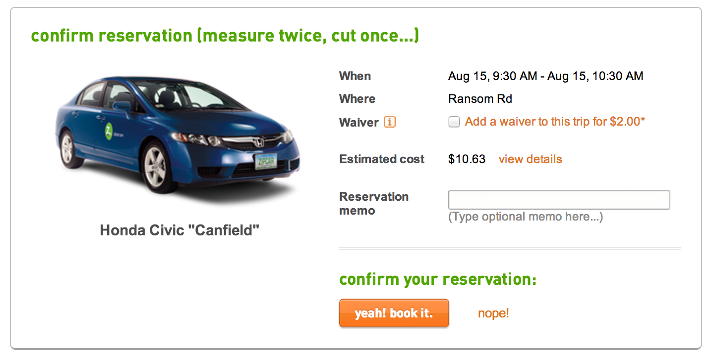
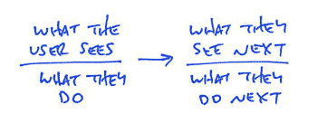
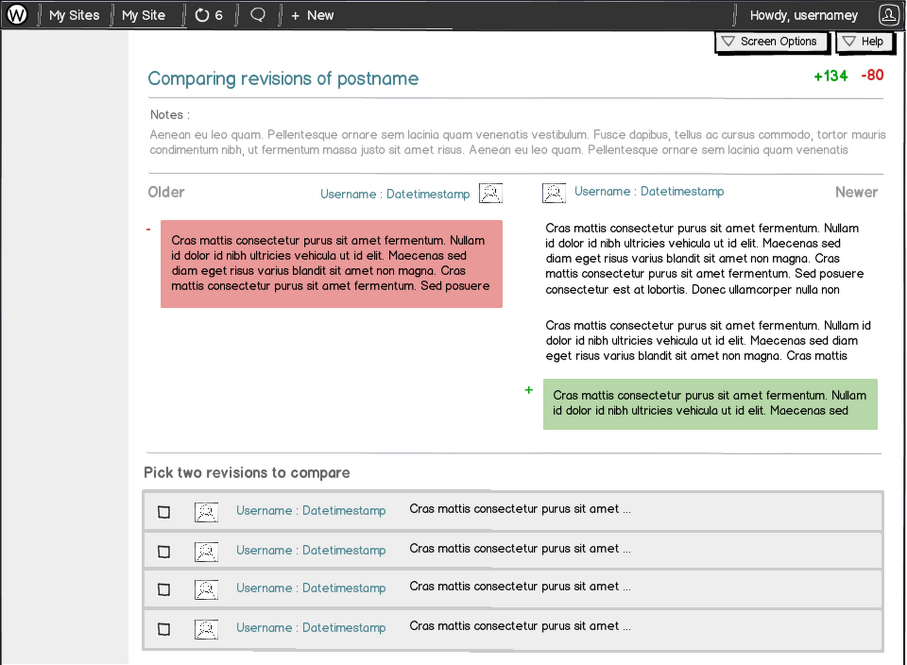
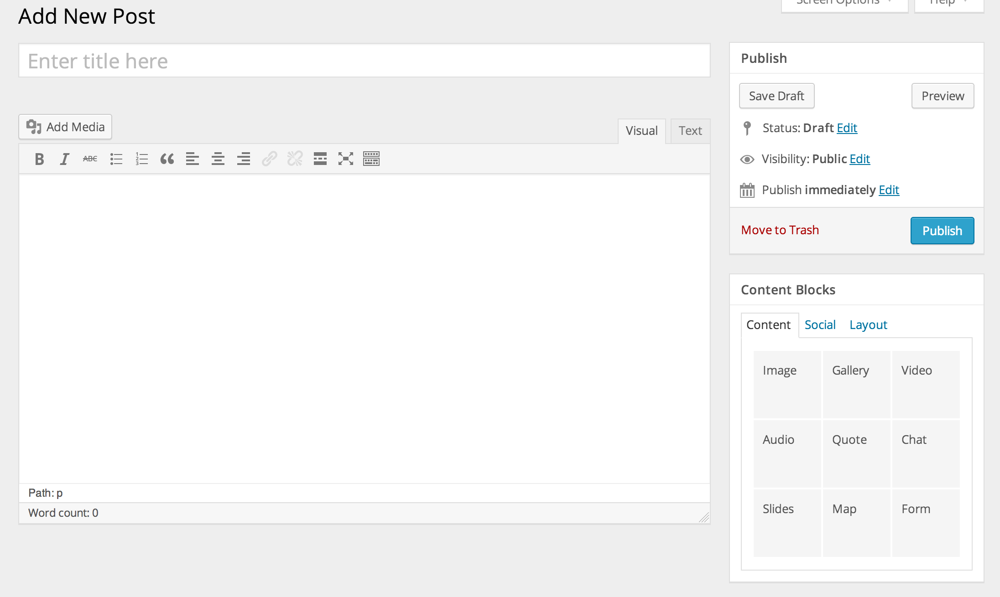

What’s Your Problem, Man?
Building a Successful UX Process
I am Mel Choyce
- Boston-based UI/UX Designer
- Work at Automattic
- @melchoyce | choycedesign.com | melchoyce.com
As a designer,
I fight for the users
What is User Experience?
User Experience (UX)...
Encompasses all aspects of the end-user's interaction with a company, its services, and its products. 1
[UX] is how a person feels when interfacing with a system. 2
1. The Definition of User Experience
2. What Is User Experience Design? Overview, Tools And Resources
UX can be...
- Done by anyone, not just designers
- Cheap
- Fast
- Applied to any project
Good UX
Bad UX

What does a successful UX process look like?
UX Process
- Define your problem
- Investigate your environment
- Identify your users
- Design based on their actions
- Test early and often
- Iterate
Define your problem
Start with problems, not solutions
Post Formats UI
Answering the wrong problem

It’s not just a matter of polish, it seems to be a fundamental issue with the concept. — Mark Jaquith
If not post formats...
Then what?
Maybe the problem is...
We lack the tools for elegant and structured content curation
Investigate your environment
Talk to stakeholders

Look at competitors

Identify your users
Who are your:
- Existing users
- Target users
- Non-users
User investigation tools
- Surveys

- Interviews
- Personas
Design based on their actions
User Flows
Wireframes
Can be simple
Can be complex

Prototypes
Test early and often
Rocket Surgery Made Easy
by Steve Krug
(5:30)